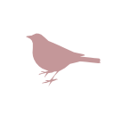

Sparrow
A small macOS menu bar app for switching Spaces with your mouse side buttons.
Use Your Mouse To Move Between Spaces
Sparrow lets you assign mouse buttons to move one macOS Space left or right. It is built for people who use multiple desktops and want a quick mouse-first way to navigate them.
Features
- Switch Spaces using configurable mouse buttons.
- Choose separate buttons for moving left and right.
- Runs quietly from the macOS menu bar.
- Native Settings window for button mapping.
- Preferences are stored locally on your Mac.
Support
If Sparrow does not respond to mouse buttons, check macOS privacy settings and make sure the app has permission to observe input. Sparrow needs this permission to detect global mouse button presses.
Privacy details are available in the Privacy Policy.